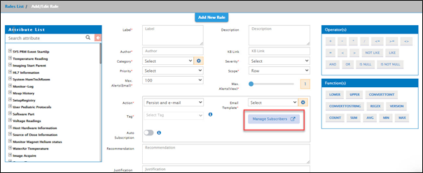
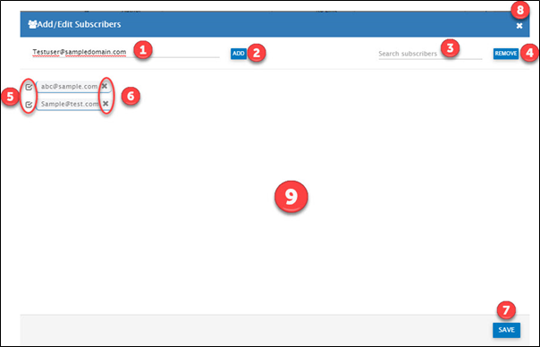
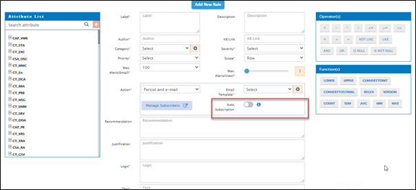
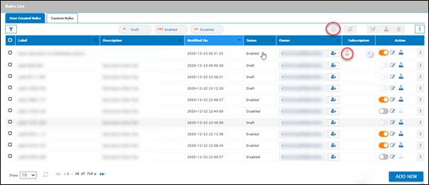
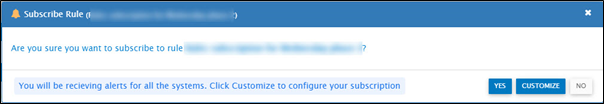

Rule Subscription
In order to have a controlled list of users that receive e-mail notifications for alerts, it is possible to define a list of subscribers for a rule.
A rule generates alerts when the rule logic renders true while parsing data. After alerts are generated, the subsequent action(s) taken by Glassbeam’s Rules Engine is decided by the Action parameter selected for the rule. The action “Persist and e-mail” facilitates e-mail subscription to alerts generated by the rule.
Rule Subscription consists of 2 parts:
Subscription List: Connecting a list of subscribers to the rule in order for the subscribed users to receive e-mail notifications when the rule generates alerts. In order to do this, while creating a new rule or editing an existing rule, do the following steps:
- Select Action as Persist and e-mail to avail the rule subscription related options.
- Click on Manage Subscribers to connect a subscriber list to the rule. The Manage Subscribers link is shown below.

Click on Manage Subscribers link to view the subscribers’ list screen.

|
Number |
Description |
|
1 |
Key in the e-mail id that needs to be included in the subscription list |
|
2 |
Click here to add the e-mail id in to the list annotated by Note: Do NOT add distribution list e-mail id. Only individual's e-mail id is supported. If distribution list e-mail id is added, then when a user unsubscribes, all users in the distribution list will get unsubscribed from the rule. Click here to know more about unsubscribe. |
|
3 |
Key in the e-mail id to be searched in the list annotated by |
|
4 |
Click here to delete multiple e-mail ids in the list. This is enabled only when an e-mail id is selected from the list annotated by |
|
5 |
Click here to select an e-mail id to be removed from the list. Multiple e-mail ids can be selected and removed. |
|
6 |
Click here to remove individual e-mail ids from the subscription list. |
|
7 |
Click here to save the subscription list. |
|
8 |
Click here to close the screen. |
|
9 |
The subscribers list that is attached to the rule |
Auto-Subscription: Auto-Subscription is disabled by default. By enabling Auto-Subscription, you allow users to subscribe to this rule. The subscribed users then receive e-mail notifications when the rule generates alerts. Auto-Subscription is enabled as follows:

For an ‘Auto-Subscription’ enabled rule, users having access to Rules and Alerts will see the Subscribe option in the rules list - as shown below.

Click on the subscribe option to see the following confirmation message:

Click NO to exit the subscription message.
Created with the Personal Edition of HelpNDoc: Create HTML Help, DOC, PDF and print manuals from 1 single source